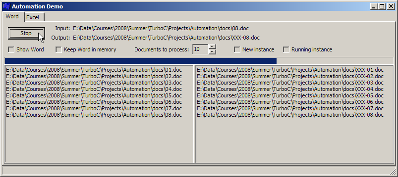

Automation
This sessions shows how automation works by "controlling" Microsoft Word from
an application. The demo simply opens up a Word document and saves it under a different name. The code
is pretty self-explanatory. I never got the Excel example to run correctly, so there's nothing on that
page currently.
To really understand what is going on you need to understand
Object Linking and Embedding (OLE), OLE Automation
and The Component Object Model (COM).
They are very complex technologies with a steep learning curve. Fortunately, Turbo C++ and
RAD Studio have created a very nice environment in which to handle all of the tedious complexities.
You will never want to program these technologies "by hand" again!
- MainForm.h - The definition of the main form.
- MainForm.cpp - The implementation.
- Project files (Turbo C++ only) (See notes about XE 3 at the bottom
of the page) - to build it yourself. The .zip file
includes a /docs folder with some Microsoft Word documents to play with.
- Help File This is a Windows help file from Microsoft. It shows
several examples. Unfortunately, all of the examples are in Visual Basic, as that was the main reason
for automation. This file was originally downloaded from here.

Note: I'm not sure why yet, but this project doesn't work with the latest IDE. I get an Internal Compiler Error. I think it
has something to do with the version of the automation objects that I'm using. It does work with Turbo C++ 2006, though, so you can still
experiment with it, if you want. I also believe this only works with Microsoft Word 2000, since the API is
different between versions. Since it's pretty old, it probably has limited use today, but the code to perform
the automation would be similar.
Finally, this project wasn't a theoretical one just for demonstration purposes. In 2006, when I switched over
to Linux full-time, I had hundreds of Word documents from previous years. I didn't want to lose them, nor
did I want to manually convert each one to a format that I could handle in Linux (with OpenOffice, at the
time.) So, I wrote this project to "automate" (hence the term automation) the conversion process.
I actually wrote it in Delphi, as it was probably the most powerful native Windows language ever created. I just
"ported" it to C++ for this session.
So, just exactly what was I converting? I was converting many older version of Word documents into the
Word 2000 version, which could be handled in OpenOffice just fine. The process simply opens a Word document
and then saves it as a newer version. I could have done nearly anything with the automation, such as changing
fonts, or adding/removing text, styles, tables, etc. I just wanted the version upgraded. OpenOffice wasn't able to handle some
of the older Word formats, so this solved that problem nicely!
I was able to compile most of this project with RAD Studio XE 3, but a few lines didn't compile. It's likely
due to the old version of Word and/or Windows 7. I don't own any other version of Word (and it's unlikely I ever will)
so I won't be able to update this.